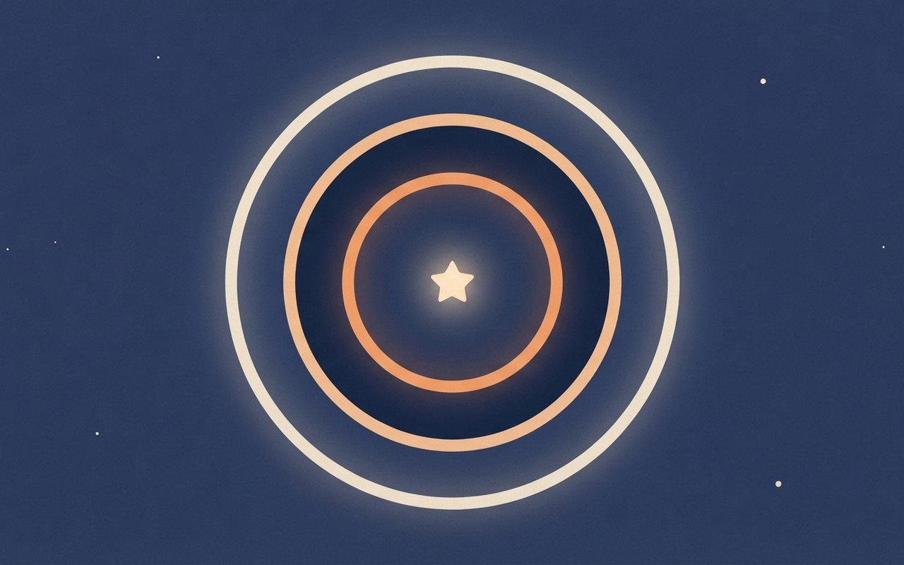
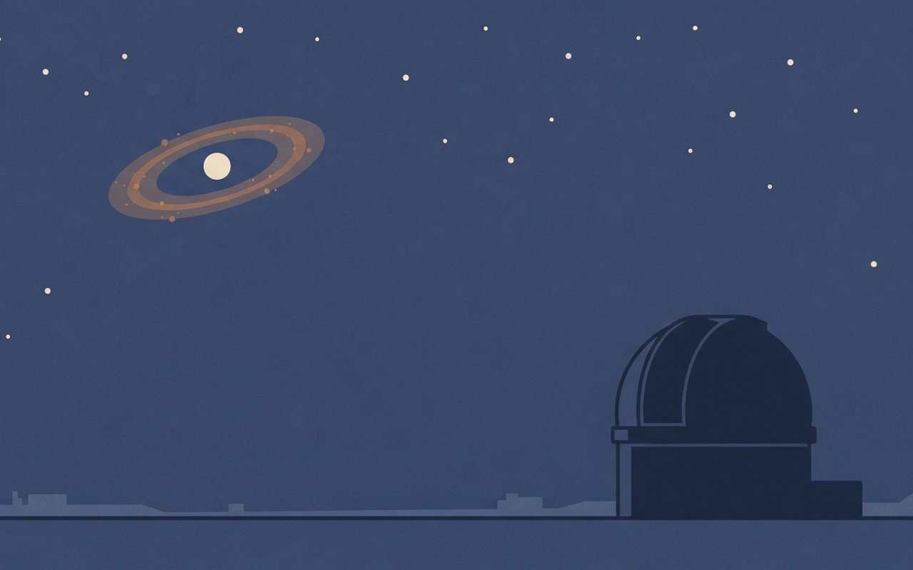
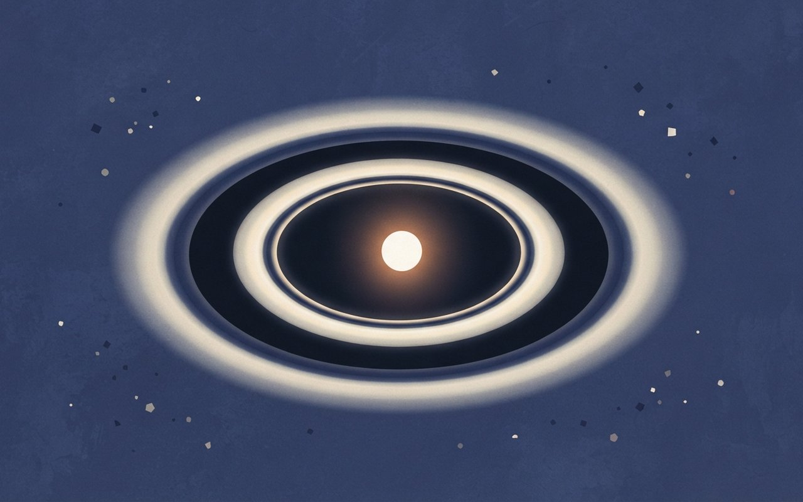
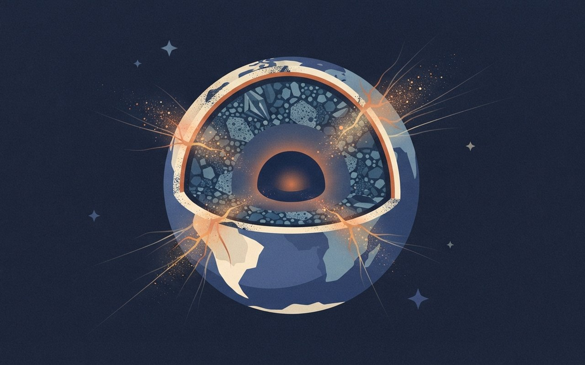
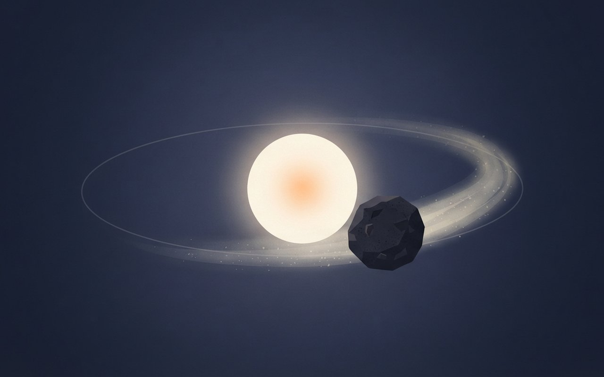
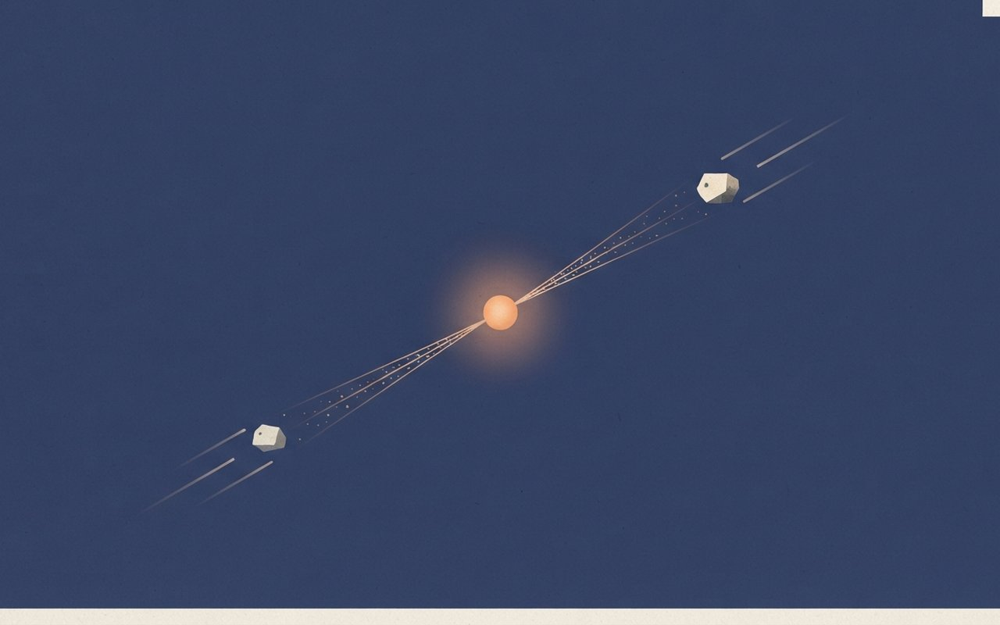

🎧 낭독 원고 보기
11월 1일 일요일, 우주·과학 브리프입니다. 오늘은 죽은 별 주위에서 발견된 두 겹의 가스 고리 이야기입니다.
가스 원반을 가진 백색왜성은 지금까지 21개가 알려져 있는데, 모두 빛의 스펙트럼 윤곽에 봉우리가 두 개였습니다. 이번에 WD J1328 마이너스 1450이라는 별에서는 봉우리가 네 개 나타났습니다. 연구진은 가스 고리가 안쪽과 바깥쪽 두 겹이라고 해석합니다. 유럽남방천문대 ESO가 10월 27일 발표했고, 논문은 Nature Astronomy에 실렸습니다.
백색왜성은 태양 같은 별이 연료를 다 쓰고 남긴 핵입니다. 태양도 약 50억 년 뒤에는 백색왜성이 됩니다. 이번 별은 칠레 파라날의 초거대망원경 VLT에 달린 X-shooter 분광기로 관측했습니다. 별빛을 무지갯빛으로 펼쳐 보면 어떤 원소가 어떻게 움직이는지 읽을 수 있습니다. 회전하는 고리에서는 다가오는 쪽 가스와 멀어지는 쪽 가스가 각각 봉우리를 만들어서, 고리가 하나면 봉우리가 둘이고 속도가 다른 고리 두 겹이 겹치면 넷이 됩니다.
고리의 위치는 이렇게 읽습니다. 안쪽 가스 고리는 별 중심에서 태양 반지름의 0.14배에서 0.34배 사이이고, 바깥쪽은 0.54배에서 1.93배 사이입니다. 두 고리 사이에는 빈틈이 있고, 관측은 2021년 5월부터 7월, 그리고 2023년 5월에 이뤄졌습니다. 별은 표면 온도가 약 1만 7,400켈빈, 질량은 태양의 0.47배이고, 신호는 2년 넘게 변하지 않았습니다. 이 반지름들은 선 윤곽에 모형을 맞춘 값이라 오차 범위가 큽니다. 연구진 중 한 명은 두 고리가 놀랄 만큼 안정적이라고 말했습니다.
두 고리는 성분도 다릅니다. 마그네슘 신호가 안쪽 고리에서만 나옵니다. 참고로 운석인 콘드라이트의 마그네슘 대 칼슘 비는 약 5에서 15, 지구 맨틀은 약 8, 지구 지각은 약 1.6입니다. 두 고리가 같은 비율이라면 바깥 고리에서도 보여야 하는데 보이지 않았고, 이는 바깥 고리에 마그네슘이 뚜렷이 부족하다는 뜻이라고 논문은 씁니다. 한 행성의 서로 다른 층, 곧 마그네슘이 많은 맨틀과 부족한 지각 물질이 각각 고리를 만들었을 가능성도 열려 있습니다.
그렇다면 고리를 만드는 천체는 얼마나 클까요. ESO는 안쪽은 수 킬로미터, 바깥쪽은 명왕성이나 달만 한 크기까지 가능하다고 설명합니다. 논문 계산으로는 별의 조석력에 부서지지 않으려면 바깥 고리 천체의 밀도가 세제곱센티미터당 63그램을 넘어야 하는데, 알려진 가장 조밀한 외계행성의 세 배가 넘습니다. 그래서 내부 강도가 있는 단단한 천체여야 한다고 결론 냅니다. 안쪽과 바깥쪽 크기는 모두 가능한 최대치를 따진 상한 추정입니다.
다만 이 행성체들은 직접 관측된 것이 아니라 원반 구조에서 추론한 것입니다. 직접 본 것은 봉우리가 네 개인 스펙트럼이고, 행성체 둘이라는 설명은 해석입니다. 한 행성의 서로 다른 층이 각각 고리를 만들었을 가능성도 남아 있습니다. 이 발견은 태양계의 먼 미래를 미리 보여 주는 사례로도 소개됩니다. 후속 관측 계획은 공식적으로 알려진 것이 없고, ESO의 차세대 장비로 이런 이중 원반을 일상적으로 찾을 수 있게 될 것이라는 전망은 2차 매체의 보도입니다.
정리하면, 확인된 것은 봉우리 네 개의 스펙트럼, 2년 넘게 변하지 않은 안정성, 안쪽 고리의 마그네슘 신호입니다. 추론인 것은 고리 두 겹을 만든 행성체 둘과 그 크기이고, 열려 있는 것은 한 행성의 서로 다른 층일 가능성과 후속 관측 계획입니다. 헤드라인의 행성 둘 발견은 행성체 둘일 수 있는 구조의 발견으로 읽는 편이 정확합니다.
이상 우주·과학 브리프였습니다. 좋은 한 주 보내세요.
環
봉우리 4개의 신호
가스 원반 백색왜성 21개는 모두 봉우리가 둘이었다 — 이 별만 넷이다
ESO와 공동 연구진은 백색왜성 WD J1328−1450 주위에 가스 고리가 두 겹 있다고 발표했다. 칼슘 이온(Ca II) 방출선 등의 선 윤곽에서 봉우리가 넷으로 나타났기 때문이다(논문 수락본·Universe Today). 지금까지 알려진 가스 원반 백색왜성 21개는 모두 봉우리가 둘이었다.
논문은 Nature Astronomy에 실렸고(DOI 10.1038/s41550-026-03004-3, 게재일은 EarthSky 기준 10월 26일), ESO 보도자료 eso2613은 10월 27일 나왔다. 연구진은 이 구조를 만드는 행성체가 고리마다 하나씩, 둘일 수 있다고 제안한다(ESO).
- 대상WD J1328−1450(WD J132800.85−145019.95) · 백색왜성
- 신호Ca II·O I 방출선 선 윤곽 봉우리 4개(기존 21개는 2개)
- 해석가스 고리 2겹 · 각각을 행성체가 만들 가능성
- 공개논문 2026-10-26 · ESO 보도 2026-10-27(심사 통과)
🔭 알고 보면 달라지는 것
이 카드의 "행성체 둘"은 관측된 천체가 아니라 신호를 설명하려고 제안된 해석이다. 보인 것은 봉우리 네 개짜리 스펙트럼이다.
ESO — 보도자료 eso2613 Universe Today — 봉우리 4개·기존 21개
ESO(2026-10-27)·Universe Today(날짜 본문 미표기, 10/27 전후) · 서지·DOI·Ca II 선 윤곽은 논문 수락본 PDF(카드 3·4 출처 참고), 게재일 10/26은 EarthSky(카드 2 출처) 근거 (확인 2026-11-01)
죽은 별의 가스 고리,
봉우리가 4개
가스 원반이 있는 백색왜성 21개는 모두 신호의 봉우리가 둘이었어요. 이 별만 넷이고, 그래서 가스 고리가 두 겹이라는 해석이 나왔어요.
21개|봉우리 2개였던 기존 백색왜성
A tiny dim white star surrounded by two faint concentric glowing gas rings with a dark gap between them, deep space, conceptual schematic, not a real photograph, no text

星
백색왜성이란
태양도 약 50억 년 뒤 이 모습이 된다 — 죽은 별을 VLT 분광기로 읽었다
백색왜성은 태양 같은 별이 연료를 다 쓰고 남긴 뜨거운 핵이다. EarthSky는 태양도 약 50억 년 뒤 백색왜성이 된다고 설명한다. 이 때문에 연구진은 이번 발견을 태양계의 먼 미래를 엿보는 사례로 소개한다.
관측에는 칠레 파라날 ESO VLT의 X-shooter 분광기가 쓰였다(TechTimes). 별빛을 파장별로 펼치면 어떤 원소가 어떤 속도로 움직이는지 선 윤곽에서 읽을 수 있고, 고리가 하나면 봉우리가 둘, 속도가 다른 고리 둘이 겹치면 넷이 된다는 것이 해석의 핵심이다.
- 정체태양 같은 별이 남긴 핵 · 태양도 약 50억 년 뒤
- 장비ESO VLT(파라날) X-shooter 분광기
- 원리회전하는 고리: 다가오는 쪽·멀어지는 쪽 가스가 각각 봉우리 → 고리 1겹 2개, 2겹 4개
🔭 알고 보면 달라지는 것
사진 한 장이 아니라 빛의 모양에서 읽어 낸 구조다. 그래서 이 연구의 그림은 모두 상상도이고, 근거는 선 윤곽의 숫자다.
EarthSky — 백색왜성·태양의 미래 TechTimes — X-shooter 관측
EarthSky(2026-10-29)·TechTimes(2026-10-28, 2차 매체) · 봉우리 원리 설명은 일반 해설이며 논문의 모형 해석과 같은 방향 (확인 2026-11-01)
태양의 먼 미래,
백색왜성을 읽다
태양도 약 50억 년 뒤 백색왜성이 돼요. 연구진은 칠레 VLT의 X-shooter 분광기로 별빛을 펼쳐 가스의 움직임을 읽었어요.
약 50억 년|태양이 백색왜성이 되기까지
A small white dwarf star with a faint disc of dust next to a distant large telescope dome silhouette under a starry sky, conceptual schematic, not a real photograph, no text

譜
고리는 어디에
안쪽 0.14~0.34, 바깥 0.54~1.93 태양 반지름 — 2년 넘게 변하지 않았다
선 윤곽 모형으로 맞춘 안쪽 가스 고리는 별 중심에서 0.14~0.34 R☉, 바깥 고리는 0.54~1.93 R☉(R☉ = 태양 반지름)이다. 두 고리 사이에는 틈이 있고, 시선에 대한 기울기는 약 77°이며 선 윤곽은 2년 넘게 변하지 않았다(논문 수락본). 관측은 2021년 5~7월과 2023년 5월에 이뤄졌다.
별은 표면 온도 약 17,424 K, 질량 약 0.47 M☉(태양의 0.47배)다. 공동 저자 레이고스-빌체스는 두 가스 고리가 "놀랄 만큼 안정적"이라고 말했다(phys.org).
- 안쪽 고리0.14(+0.01/−0.02) ~ 0.34(+0.02/−0.05) R☉
- 바깥 고리0.54(+0.44/−0.16) ~ 1.93(+0.10/−0.30) R☉
- 기울기시선 기준 77(+9/−13)°
- 별Teff 17,424 ± 567 K · 0.47 ± 0.09 M☉ · 냉각 나이 73(+49/−26) 백만 년
- 관측2021년 5·6·7월, 2023년 5월(VLT X-shooter)
- 확인 한계수락본 PDF는 8월 생성본이라 출판본과 숫자가 다를 수 있음 · 고리 반지름은 모형 맞춤값(오차 큼)
🔭 알고 보면 달라지는 것
가스는 별 가까이에서 쉽게 흩어지는데도 2년 넘게 모양이 그대로라는 점이 포인트다. 고리를 계속 채우는 무언가가 있다는 단서가 된다.
논문 수락본(PDF) — 고리 반지름·별 물리량 phys.org — 저자 인용
논문 수락본 PDF(2026-08 생성)·phys.org(2026-10-27) · 수치는 PDF 표기 그대로 · 출판본 대조 못 함 (확인 2026-11-01)
두 고리 사이엔 틈,
2년째 그대로
안쪽 고리는 태양 반지름의 0.14~0.34배, 바깥 고리는 0.54~1.93배 구간이에요. 모양은 2년 넘게 변하지 않았어요.
1.93배|바깥 고리 끝(태양 반지름 기준)
Two thin concentric glowing rings of gas around a small white star seen at a steep angle with a dark empty gap between the rings, conceptual schematic, not a real photograph, no text

鎂
성분이 다르다
마그네슘 신호는 안쪽 고리에만 — 바깥 고리에선 6σ 넘게 있어야 할 신호가 없다
마그네슘(Mg I) 방출선은 안쪽 고리에서만 나온다. 두 고리의 칼슘 대비 마그네슘 비가 같다면 바깥 고리에서도 6σ 넘는 Mg 방출이 보여야 하는데 없다. 논문은 이를 바깥 고리에 Mg가 뚜렷이 부족하다는 "모형에 의존하지 않는 증거"로 쓴다(논문 수락본).
ESO는 두 고리의 성분 차이를 한 행성체의 서로 다른 층, 곧 지각과 핵이 각각 고리를 만든 경우로도 설명할 수 있다고 소개한다. 논문은 마그네슘이 많은 맨틀 물질과 적은 지각 물질이 각각 고리를 만들었을 가능성도 든다. 즉 "행성체 둘"과 "행성 하나의 서로 다른 층"이 아직 함께 열려 있다.
- 신호흡수선 Ca·Mg·Si · 방출선 Ca II·O I·Mg·Fe II(수락본은 Mg I/II 표기 혼재)
- 핵심Mg I 방출은 안쪽 고리만 · 바깥 고리 Mg 부족
- 비교값콘드라이트 Mg/Ca 약 5~15 · 지구 맨틀 약 8 · 지구 지각 약 1.6
- 대안 해석한 행성체의 서로 다른 층이 각각 고리를 형성(ESO: 지각·핵 / 논문: 맨틀·지각)
- 확인 한계별 대기의 Mg 함량은 선 하나에서 구해 과소평가 가능성(논문) — 고리의 Mg 부재 판정과는 별개 · 원반 모형의 변수끼리 겹쳐 다른 배치도 맞을 수 있음(논문)
🔭 알고 보면 달라지는 것
두 고리의 성분 차이는 "서로 다른 천체"를 지지하는 단서이지 증명이 아니다. 같은 천체의 서로 다른 층이라는 설명이 여전히 가능하다.
논문 수락본(PDF) — 조성·Mg/Ca ESO — 맨틀·지각 대안
논문 수락본 PDF·ESO 보도자료(2026-10-27) · 6σ·비교값은 PDF 기준, 층 구조 대안은 ESO(지각·핵)·논문(맨틀·지각) 기준 (확인 2026-11-01)
마그네슘 신호는
안쪽 고리에만
같은 성분이라면 바깥 고리에서도 보여야 하는데 보이지 않았어요. 서로 다른 천체일 수도, 한 행성의 서로 다른 층일 수도 있어요.
6σ 이상|있어야 하는데 없는 Mg 신호
A cutaway of a small rocky planetary body showing a magnesium-rich mantle layer and a thin crust layer with glowing dust streaming from each layer, conceptual schematic, not a real photograph, no text

質
얼마나 큰가
안쪽은 수 km, 바깥은 명왕성·달급까지 — 바깥 천체는 밀도 63 g/cm³ 이상이어야 한다
ESO 설명으로 안쪽 고리를 만드는 천체는 수 km 크기, 바깥쪽은 명왕성이나 달만 한 크기까지 가능하다(phys.org). 이는 상한 추정이다.
논문은 별의 조석력에 부서지지 않으려면 바깥 원반 천체의 요구 밀도가 최대 63 g/cm³ 이상이라고 계산했다. 알려진 가장 조밀한 외계행성의 3배가 넘는 값이라, 내부 강도를 가진 단단한 천체여야 한다고 결론 낸다(Universe Today).
- 안쪽 천체수 km(ESO 서술) — 상한 추정
- 바깥 천체명왕성·달 크기까지(ESO 서술) — 상한 추정
- 요구 밀도바깥 원반 최대 ≳63 g/cm³ · 가장 조밀한 알려진 외계행성의 3배 넘음(Universe Today)
- 결론내부 강도를 가진 천체여야 조석 파괴를 견딤
- 확인 한계직접 관측된 천체가 아님 · 보도의 크기와 논문 계산의 상한 표현이 다를 수 있어 보도자료 서술을 따름
🔭 알고 보면 달라지는 것
"명왕성만 하다"는 가능한 최대 크기이지 실제 크기가 아니다. 밀도 계산은 크기를 정하기보다 맨몸 덩어리로는 안 되고 단단해야 한다는 조건을 준다.
Universe Today — 요구 밀도 phys.org — 크기 서술(ESO 전재)
Universe Today(10/27 전후)·phys.org(2026-10-27) · 크기 서술은 ESO 보도자료 전재, 밀도는 Universe Today (확인 2026-11-01)
바깥 고리 천체는
단단해야 한다
바깥 고리 천체는 명왕성이나 달만 한 크기까지 가능하다고 해요. 별의 중력에 부서지지 않으려면 밀도가 알려진 외계행성의 3배 넘게 높아야 해요.
63 g/cm³ 이상|바깥 천체 요구 밀도
A small dense rocky body orbiting a white dwarf star close enough to be stretched by tidal forces yet holding together, conceptual schematic, not a real photograph, no text

未
확정이 아닌 부분
행성체는 직접 보인 게 아니다 — 후속 관측 계획은 아직 알려진 게 없다
이 연구에서 직접 관측된 것은 스펙트럼의 선 윤곽이다. 행성체의 존재와 크기는 원반 구조에서 추론한 것이고, 두 고리의 성분 차이를 한 행성의 층 구조로 설명할 가능성도 남아 있다.
연구가 주목받는 이유는 태양 같은 별의 먼 미래를 미리 보여 줄 수 있어서다(EarthSky). 후속 관측 계획은 보도자료와 phys.org에 적혀 있지 않다. TechTimes는 ESO의 차세대 장비로 이런 이중 원반 계를 일상적으로 찾을 수 있게 될 것으로 본다고 썼지만, 이는 2차 매체의 전망이며 이 별에 대한 구체적 계획은 아니다.
- 확인된 것선 윤곽 봉우리 4개 · 2년 넘는 안정성 · 안쪽 Mg 신호(심사 통과 논문)
- 추론인 것고리 2겹의 행성체 2개 · 크기(상한)
- 열린 것한 행성의 서로 다른 층일 가능성 · 후속 관측 계획 미공개
🔭 알고 보면 달라지는 것
확실한 것과 추론인 것을 나눠 읽으면 헤드라인의 "행성 둘 발견"은 "행성체 둘일 수 있는 구조 발견"으로 읽힌다.
EarthSky — 태양계의 미래 TechTimes — 이중 원반 전망(2차)
EarthSky(2026-10-29)·TechTimes(2026-10-28, 2차 매체) · 후속 관측 계획: 공식 문서 근거 없음 (확인 2026-11-01)
행성체는 추론,
후속 계획은 미정
직접 본 것은 스펙트럼이고 행성체 둘은 해석이에요. 한 행성의 서로 다른 층일 가능성도 남아 있고, 후속 관측 계획은 아직 알려지지 않았어요.
4개|확인된 스펙트럼 봉우리
A white dwarf star with two faint ghostly outlines of small planetary bodies sketched in dotted lines near its rings, expressing uncertainty, conceptual schematic, not a real photograph, no text
